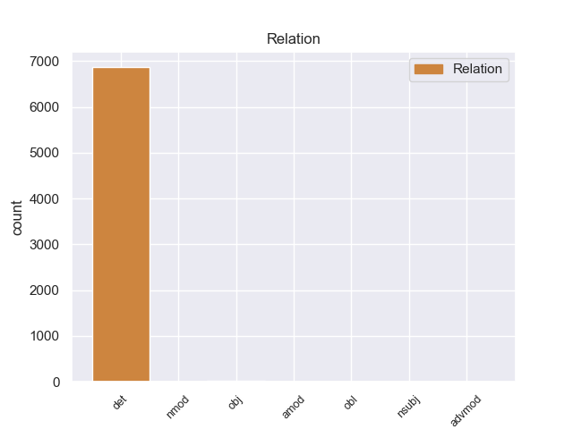
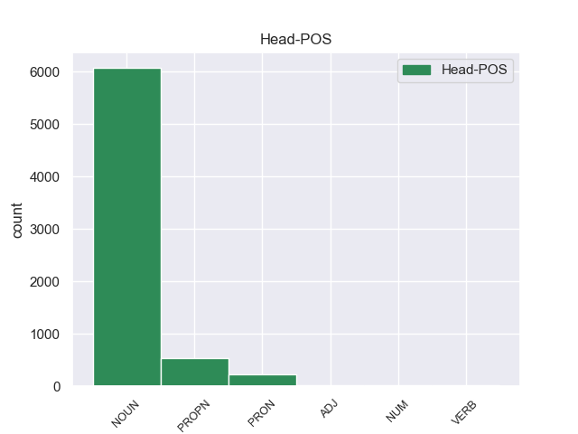
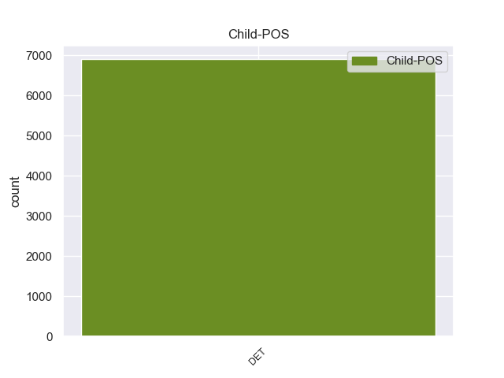

Distribution of features within this leaf



Agreement Rules sorted by frequency.
When the dependent token is None
1 Αυτό _ _ _ _ 0 _ _ _
2 μπορεί _ _ _ _ 0 _ _ _
3 να _ _ _ _ 0 _ _ _
4 μην _ _ _ _ 0 _ _ _
5 οδηγήσει _ _ _ _ 0 _ _ _
6 σ _ _ _ _ 0 _ _ _
7 τη _ _ _ _ 0 _ _ _
8 λήξη _ _ _ _ 0 _ _ _
9 του _ _ _ _ 0 _ _ _
10 εν _ _ _ _ 0 _ _ _
11 λόγω _ _ _ _ 0 _ _ _
12 ζητήματος _ _ _ _ 0 _ _ _
13 αλλά _ _ _ _ 0 _ _ _
14 , _ _ _ _ 0 _ _ _
15 σ _ _ _ _ 0 _ _ _
16 τη _ _ _ _ 0 _ _ _
17 μορφή _ _ _ _ 0 _ _ _
18 υπό _ _ _ _ 0 _ _ _
19 την _ _ _ _ 0 _ _ _
20 οποία _ _ _ _ 0 _ _ _
21 την _ _ _ _ 0 _ _ _
22 λάβαμε _ _ _ _ 0 _ _ _
23 , _ _ _ _ 0 _ _ _
24 αυτή _ _ _ _ 0 _ _ _
25 η _ _ _ _ 0 _ _ _
26 αίτηση _ _ _ _ 0 _ _ _
27 άρσης _ _ _ _ 0 _ _ _
28 της _ _ _ _ 0 _ _ _
29 ασυλίας _ _ _ _ 0 _ _ _
30 ήταν _ _ _ _ 0 _ _ _
31 , _ _ _ _ 0 _ _ _
32 κατά _ _ _ _ 0 _ _ _
33 την _ _ _ _ 0 _ _ _
34 άποψη _ _ _ _ 0 _ _ _
35 της _ _ _ _ 0 _ _ _
36 Επιτροπής _ _ _ _ 0 _ _ _
37 Νομικών _ _ _ _ 0 _ _ _
38 Θεμάτων _ _ _ _ 0 _ _ _
39 , _ _ _ _ 0 _ _ _
40 απαράδεκτη _ _ _ _ 0 _ _ _
41 , _ _ _ _ 0 _ _ _
42 άποψη _ _ _ _ 0 _ _ _
43 την _ _ _ _ 0 _ _ _
44 οποία _ _ _ _ 0 _ _ _
45 συνιστώ _ _ _ _ 0 _ _ _
46 σ _ _ _ _ 0 _ _ _
47 το ο DET _ Case=Acc|Gender=Neut|Number=Sing 48 det _ _
48 Σώμα σώμα NOUN _ Case=Acc|Gender=Neut|Number=Sing 0 _ _ _
49 να _ _ _ _ 0 _ _ _
50 υιοθετήσει _ _ _ _ 0 _ _ _
51 . _ _ _ _ 0 _ _ _
Disagree Examples:
1 Η _ _ _ _ 0 _ _ _
2 σημαντικότητα _ _ _ _ 0 _ _ _
3 του _ _ _ _ 0 _ _ _
4 Αχέροντα _ _ _ _ 0 _ _ _
5 ήταν _ _ _ _ 0 _ _ _
6 μεγάλη _ _ _ _ 0 _ _ _
7 κατά _ _ _ _ 0 _ _ _
8 την _ _ _ _ 0 _ _ _
9 αρχαιότητα _ _ _ _ 0 _ _ _
10 , _ _ _ _ 0 _ _ _
11 οπότε _ _ _ _ 0 _ _ _
12 και _ _ _ _ 0 _ _ _
13 ιδρύθηκε _ _ _ _ 0 _ _ _
14 σ _ _ _ _ 0 _ _ _
15 την _ _ _ _ 0 _ _ _
16 βορειοανατολική _ _ _ _ 0 _ _ _
17 όχθη _ _ _ _ 0 _ _ _
18 της _ _ _ _ 0 _ _ _
19 Αχερουσίας _ _ _ _ 0 _ _ _
20 το _ _ _ _ 0 _ _ _
21 Νεκρομαντείο _ _ _ _ 0 _ _ _
22 , _ _ _ _ 0 _ _ _
23 ο _ _ _ _ 0 _ _ _
24 σημαντικότερος _ _ _ _ 0 _ _ _
25 τόπος _ _ _ _ 0 _ _ _
26 επικοινωνίας _ _ _ _ 0 _ _ _
27 με _ _ _ _ 0 _ _ _
28 τους ο DET DET Case=Acc|Definite=Def|Gender=Masc|Number=Plur|PronType=Art 29 det _ _
29 νεκρούς νεκρός NOUN NOUN Case=Acc|Gender=Masc|Number=Sing 0 _ _ _
30 και _ _ _ _ 0 _ _ _
31 λατρείας _ _ _ _ 0 _ _ _
32 των _ _ _ _ 0 _ _ _
33 θεών _ _ _ _ 0 _ _ _
34 του _ _ _ _ 0 _ _ _
35 Κάτω _ _ _ _ 0 _ _ _
36 Κόσμου _ _ _ _ 0 _ _ _
37 . _ _ _ _ 0 _ _ _
1 Το _ _ _ _ 0 _ _ _
2 παράρτημα _ _ _ _ 0 _ _ _
3 της _ _ _ _ 0 _ _ _
4 οργάνωσης _ _ _ _ 0 _ _ _
5 σ _ _ _ _ 0 _ _ _
6 τη _ _ _ _ 0 _ _ _
7 Δανία _ _ _ _ 0 _ _ _
8 ανέφερε _ _ _ _ 0 _ _ _
9 ότι _ _ _ _ 0 _ _ _
10 " _ _ _ _ 0 _ _ _
11 τα ο DET DET Case=Acc|Definite=Def|Gender=Neut|Number=Sing|PronType=Art 13 det _ _
12 φετινά _ _ _ _ 0 _ _ _
13 Χριστούγεννα Χριστούγεννα PROPN PROPN Case=Acc|Gender=Neut|Number=Plur 0 _ _ _
14 υπήρξε _ _ _ _ 0 _ _ _
15 αύξηση _ _ _ _ 0 _ _ _
16 100% _ _ _ _ 0 _ _ _
17 σ _ _ _ _ 0 _ _ _
18 τα _ _ _ _ 0 _ _ _
19 άτομα _ _ _ _ 0 _ _ _
20 που _ _ _ _ 0 _ _ _
21 ζήτησαν _ _ _ _ 0 _ _ _
22 βοήθεια _ _ _ _ 0 _ _ _
23 , _ _ _ _ 0 _ _ _
24 σε _ _ _ _ 0 _ _ _
25 σχέση _ _ _ _ 0 _ _ _
26 με _ _ _ _ 0 _ _ _
27 το _ _ _ _ 0 _ _ _
28 2009 _ _ _ _ 0 _ _ _
29 " _ _ _ _ 0 _ _ _
30 . _ _ _ _ 0 _ _ _
1 Τις _ _ _ _ 0 _ _ _
2 καταθέσεις _ _ _ _ 0 _ _ _
3 , _ _ _ _ 0 _ _ _
4 σ _ _ _ _ 0 _ _ _
5 τις _ _ _ _ 0 _ _ _
6 οποίες _ _ _ _ 0 _ _ _
7 δεν _ _ _ _ 0 _ _ _
8 έχει _ _ _ _ 0 _ _ _
9 γίνει _ _ _ _ 0 _ _ _
10 καμία _ _ _ _ 0 _ _ _
11 κίνηση _ _ _ _ 0 _ _ _
12 του _ _ _ _ 0 _ _ _
13 λογαριασμού _ _ _ _ 0 _ _ _
14 για _ _ _ _ 0 _ _ _
15 20 _ _ _ _ 0 _ _ _
16 χρόνια _ _ _ _ 0 _ _ _
17 έχει _ _ _ _ 0 _ _ _
18 βάλει _ _ _ _ 0 _ _ _
19 σ _ _ _ _ 0 _ _ _
20 το _ _ _ _ 0 _ _ _
21 στόχαστρο _ _ _ _ 0 _ _ _
22 το _ _ _ _ 0 _ _ _
23 Υπουργείο _ _ _ _ 0 _ _ _
24 Οικονομικών _ _ _ _ 0 _ _ _
25 , _ _ _ _ 0 _ _ _
26 καθώς _ _ _ _ 0 _ _ _
27 μάλιστα _ _ _ _ 0 _ _ _
28 σύμφωνα _ _ _ _ 0 _ _ _
29 με _ _ _ _ 0 _ _ _
30 εκτιμήσεις _ _ _ _ 0 _ _ _
31 τραπεζικών _ _ _ _ 0 _ _ _
32 στελεχών _ _ _ _ 0 _ _ _
33 φθάνουν _ _ _ _ 0 _ _ _
34 το _ _ _ _ 0 _ _ _
35 ποσό _ _ _ _ 0 _ _ _
36 των ο DET DET Case=Gen|Definite=Def|Gender=Neut|Number=Plur|PronType=Art 39 det _ _
37 3 _ _ _ _ 0 _ _ _
38 δισεκατομμυρίων _ _ _ _ 0 _ _ _
39 ευρώ ευρώ NOUN NOUN Case=Acc|Gender=Neut|Number=Sing 0 _ _ _
40 . _ _ _ _ 0 _ _ _
1 Οι _ _ _ _ 0 _ _ _
2 δύο _ _ _ _ 0 _ _ _
3 αντίπαλοι _ _ _ _ 0 _ _ _
4 θα _ _ _ _ 0 _ _ _
5 ξανασυναντηθούν _ _ _ _ 0 _ _ _
6 σ _ _ _ _ 0 _ _ _
7 τις _ _ _ _ 0 _ _ _
8 15 _ _ _ _ 0 _ _ _
9 Μαρτίου _ _ _ _ 0 _ _ _
10 σ _ _ _ _ 0 _ _ _
11 το _ _ _ _ 0 _ _ _
12 Στάδιο στάδιο NOUN _ Case=Acc|Gender=Neut|Number=Sing 0 _ _ _
13 « _ _ _ _ 0 _ _ _
14 Σαν _ _ _ _ 0 _ _ _
15 Μαμές _ _ _ _ 0 _ _ _
16 » _ _ _ _ 0 _ _ _
17 , _ _ _ _ 0 _ _ _
18 με _ _ _ _ 0 _ _ _
19 τους ο DET _ Case=Acc|Definite=Def|Gender=Masc|Number=Plur|PronType=Art 12 det _ _
20 Ισπανούς _ _ _ _ 0 _ _ _
21 να _ _ _ _ 0 _ _ _
22 χρειάζονται _ _ _ _ 0 _ _ _
23 νίκη _ _ _ _ 0 _ _ _
24 και _ _ _ _ 0 _ _ _
25 ισοπαλία _ _ _ _ 0 _ _ _
26 και _ _ _ _ 0 _ _ _
27 με _ _ _ _ 0 _ _ _
28 τους _ _ _ _ 0 _ _ _
29 κόκκινους _ _ _ _ 0 _ _ _
30 διαβόλους _ _ _ _ 0 _ _ _
31 να _ _ _ _ 0 _ _ _
32 χρειάζονται _ _ _ _ 0 _ _ _
33 νίκη _ _ _ _ 0 _ _ _
34 με _ _ _ _ 0 _ _ _
35 διαφορά _ _ _ _ 0 _ _ _
36 δύο _ _ _ _ 0 _ _ _
37 τερμάτων _ _ _ _ 0 _ _ _
38 . _ _ _ _ 0 _ _ _
1 Οι _ _ _ _ 0 _ _ _
2 διαδηλώσεις _ _ _ _ 0 _ _ _
3 διεξήχθησαν _ _ _ _ 0 _ _ _
4 σ _ _ _ _ 0 _ _ _
5 τη _ _ _ _ 0 _ _ _
6 Φαλούτζα _ _ _ _ 0 _ _ _
7 , _ _ _ _ 0 _ _ _
8 εξήντα _ _ _ _ 0 _ _ _
9 χιλιόμετρα _ _ _ _ 0 _ _ _
10 δυτικά _ _ _ _ 0 _ _ _
11 της _ _ _ _ 0 _ _ _
12 Βαγδάτης _ _ _ _ 0 _ _ _
13 , _ _ _ _ 0 _ _ _
14 όταν _ _ _ _ 0 _ _ _
15 οι _ _ _ _ 0 _ _ _
16 διαδηλωτές _ _ _ _ 0 _ _ _
17 , _ _ _ _ 0 _ _ _
18 οι οι DET _ Case=Nom|Definite=Def|Gender=Masc|Number=Plur|PronType=Art 19 det _ _
19 οποίοι οποίοι PRON _ Case=Nom|Gender=Fem|Number=Sing|Person=3|PronType=Rel 0 _ _ _
20 ανήκουν _ _ _ _ 0 _ _ _
21 σ _ _ _ _ 0 _ _ _
22 τη _ _ _ _ 0 _ _ _
23 μειονότητα _ _ _ _ 0 _ _ _
24 των _ _ _ _ 0 _ _ _
25 Σουνιτών _ _ _ _ 0 _ _ _
26 , _ _ _ _ 0 _ _ _
27 επιτέθηκαν _ _ _ _ 0 _ _ _
28 με _ _ _ _ 0 _ _ _
29 πέτρες _ _ _ _ 0 _ _ _
30 σ _ _ _ _ 0 _ _ _
31 τους _ _ _ _ 0 _ _ _
32 στρατιώτες _ _ _ _ 0 _ _ _
33 , _ _ _ _ 0 _ _ _
34 οι _ _ _ _ 0 _ _ _
35 οποίοι _ _ _ _ 0 _ _ _
36 με _ _ _ _ 0 _ _ _
37 τη _ _ _ _ 0 _ _ _
38 σειρά _ _ _ _ 0 _ _ _
39 τους _ _ _ _ 0 _ _ _
40 άνοιξαν _ _ _ _ 0 _ _ _
41 πυρ _ _ _ _ 0 _ _ _
42 , _ _ _ _ 0 _ _ _
43 με _ _ _ _ 0 _ _ _
44 αποτέλεσμα _ _ _ _ 0 _ _ _
45 πέντε _ _ _ _ 0 _ _ _
46 άτομα _ _ _ _ 0 _ _ _
47 να _ _ _ _ 0 _ _ _
48 χάσουν _ _ _ _ 0 _ _ _
49 τη _ _ _ _ 0 _ _ _
50 ζωή _ _ _ _ 0 _ _ _
51 τους _ _ _ _ 0 _ _ _
52 και _ _ _ _ 0 _ _ _
53 άλλα _ _ _ _ 0 _ _ _
54 είκοσι _ _ _ _ 0 _ _ _
55 να _ _ _ _ 0 _ _ _
56 τραυματιστούν _ _ _ _ 0 _ _ _
57 . _ _ _ _ 0 _ _ _